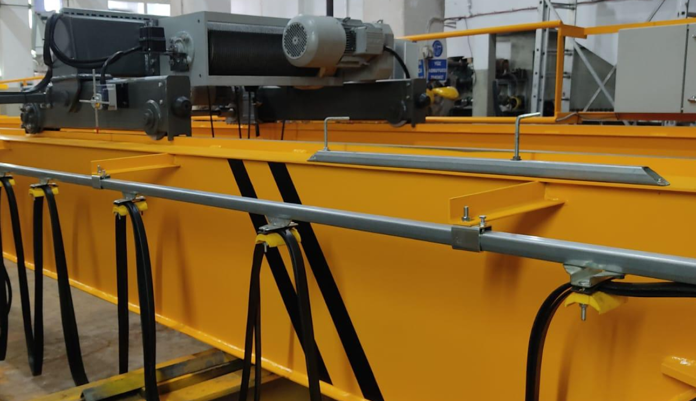
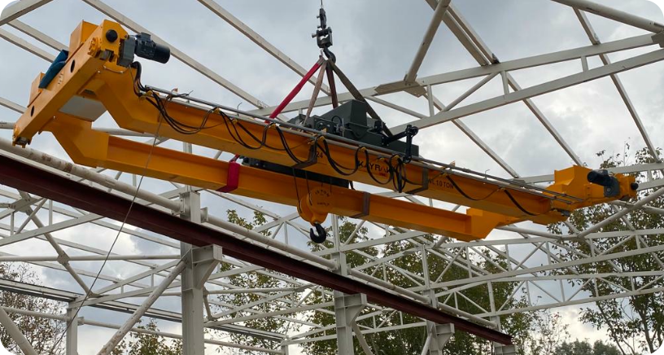
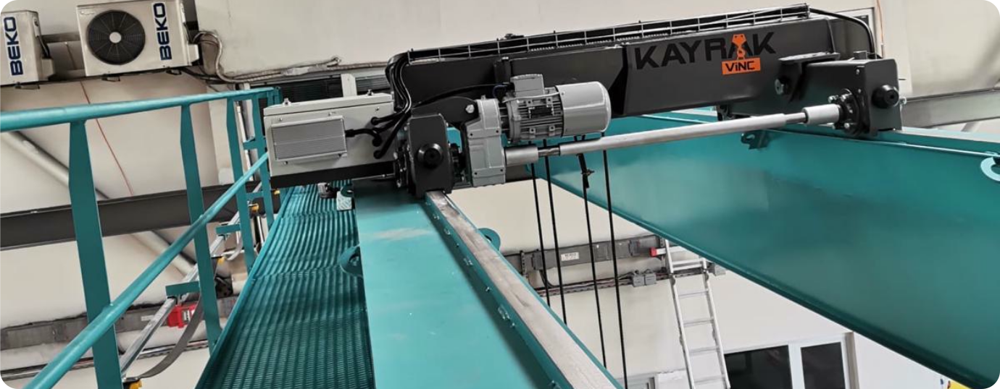
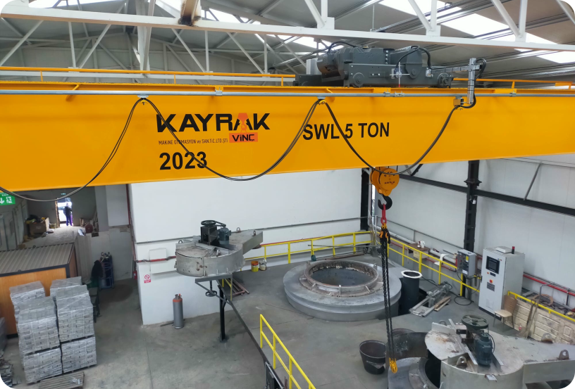
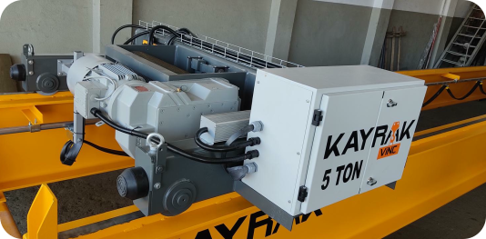
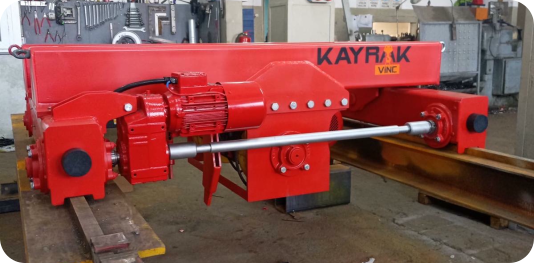
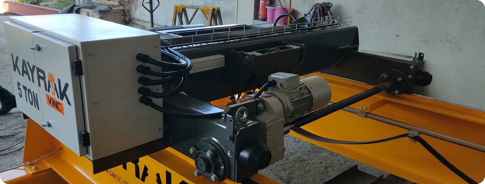

ÇİFT KİRİŞ KÖPRÜ VİNÇLER
YÜKÜNÜZÜ GÜVENLE TAŞIYORUZ
Çift kiriş köprü vinçler, yüksek taşıma kapasiteleri ve geniş açıklık mesafeleriyle endüstriyel yük kaldırma çözümlerinin vazgeçilmezidir. İki adet paralel ana kiriş üzerinde hareket eden araba tipi vinç mekanizması ile donatılmış bu sistemler; ağır sanayi, çelik konstrüksiyon imalatı, enerji santralleri ve tersane gibi ağır hizmet alanlarında ideal çözümler sunar.


Fabrikalar, atölyeler, depo sahaları ve tersaneler gibi birçok alanda tercih edilen bu sistemler, hem yüksek taşıma kapasitesi hem de kullanıcı dostu kontrolleri ile işletmelerin yükünü hafifletiyor. Modern mühendislik anlayışıyla tasarlanmış yapısı, uzun ömürlü performansı ve esnek uygulama alanları sayesinde, Gezer Köprü Vinçleri, yatırımlarınızda maksimum verimliliği garanti eder.

Günümüz sanayi ve üretim sektörlerinde verimlilik, hız ve güvenlik her zamankinden daha büyük önem taşıyor. Bu gereksinimlere yanıt verebilmek için geliştirilen Gezer Köprü Vinçler, ağır yüklerin güvenli ve etkili şekilde taşınmasını sağlayarak endüstriyel süreçlere değer katıyor.
Üretimini gerçekleştirdiğimiz vinç sistemleri, uluslararası kalite standartlarında üretilmekte olup, her projeye özel mühendislik çözümleriyle donatılmaktadır. Sadece yük taşımakla kalmaz; iş güvenliği, enerji verimliliği ve operasyonel süreklilik açısından da fark yaratır.
Siz de yükünüzü uzman ellere bırakmak, üretiminizi güvenle taşımak istiyorsanız, Gezer Köprü Vinç çözümlerimiz ile tanışın.
Teknik Özellikler:
- Kapasite Aralığı: 1 ton - 250 ton arası (isteğe göre özelleştirilebilir)
- Köprü Tipleri: Tek kirişli / Çift kirişli
- Çalışma Sınıfları: TSE/ISO standartlarına uygun
- Köprü Uzunluğu: 5 metre – 40 metre arası (özel projeler için daha uzun açıklıklar mümkündür)
- Yürüyüş Sistemi: Frekans kontrollü, çift hızlı veya otomatik sürücülü sistem
- Kontrol Tipi: Radyo kumanda, kablolu kumanda, kabinden kontrol
- Vinç Arabası: Elektrikli halat tamburlu vinç ya da zincirli vinç seçenekleri
- Güç Beslemesi: Enerji iletim sistemi kablo kanallı veya kablo tamburlu sistem



KAYRAK ÇİFT KİRİŞ GEZER KÖPRÜ VİNÇLERİ YÜK TAŞIMADA GÜCÜN VE GÜVENİN ADI

Avantajlar:
- Yüksek taşıma kapasitesi sayesinde ağır yüklerde güvenli çalışma
- Geniş açıklıklarda rijit yapı ve denge
- Operasyon sırasında daha az salınım ve daha fazla hassasiyet
- Ek donanım ve ekipmanlara (manyetik tabla, kaldırma aparatı vb.) kolay entegre edilebilirlik
- Platform ve bakım yolları ile bakım kolaylığı sağlar